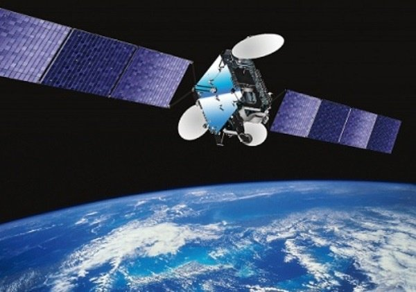

О применении спутниковых систем

В наш век всеобщей информатизации общества, где самым близким примером является всемирная паутина (Интернет), возникает необходимость правильно ориентироваться в море поступающей информации, оперативно обмениваться ею. С этой целью компании создают специализированные сетевые инфраструктуры (потоковая передача аудио и видеоданных, многоканальная телефонная сеть, охранные системы, локально-вычислительные сети и т.д.). В основном, для организации канала связи в таких сетях используются наземные линии: проводные (медные провода, оптоволокно) и беспроводные (радиоэзернет, сотовые сети).Абсолютно всем наземным каналам связи присущи следующие недостатки: ограниченное покрытие территории, проблемы модернизации сети (технические и экономические), отсутствие возможности быстро демонтировать оборудование и развернуть сеть в другом месте. Поэтому в ряде случаев использование спутниковых систем связи является наиболее оправданным не только с технической, но и с экономической точки зрения, а иногда и единственно доступным вариантом обеспечения надежной и качественной связи.
На сегодняшний день существует большое количество спутниковых систем, основанных на различных технологиях и предназначенных для различных применений.
Глобальная система определения координат
Одним из самых ярких примеров использования спутниковых технологий является глобальная система определения координат. Система позволяет с высокой степенью точности (до нескольких сантиметров) определять местоположение объекта (широту, долготу и высоту над уровнем моря), направление и скорость его движения. Достаточно интересным является использование системы многими учеными и исследователями в качестве источника точного времени. Система GPS (Global Positioning System) состоит из 24 искусственных спутников Земли, сети наземных станций слежения за ними и неограниченного количества пользовательских терминалов. Для определения местоположения GPS-приемник принимает сигналы со спутников, сравнивает время отправки сигнала со спутника со временем его получения на Земле и вычисляет точные координаты.
Система GPS работает непрерывно. Для пользования системой GPS достаточно приобрести GPS-приемник. В зависимости от назначения, можно выбрать носимые, автомобильные, морские, авиационные модели приемников. GPS позволяет существенно сократить затраты, связанные с поисковыми работами и значительно сократить время проведения спасательных операций. Плата за подключение и абонентская плата за пользование системой GPS не взимается.
ГЛОНАСС – российская система определения координат, полностью аналогична американской системе GPS. Орбитальная группировка также состоит из 24 спутников, размещенных в трех орбитальных плоскостях, развернутых друг относительно друга на 120 градусов. Система ГЛОНАСС сопоставима по точности с системой GPS. Принцип работы идентичен.
Спутниковые охранные комплексы
На основе технологии GPS в настоящее время бурными темпами развиваются спутниковые охранные комплексы. В автомобильной индустрии классическая многоуровневая охранная система дополняется каналом связи и системой определения координат автомобиля с помощью, как классических методов радиолокации, так и на основе GPS. Разработанных и внедренных охранных систем достаточно много (Cesar Satellite, Навигатор, АвтоЛокатор, LOJACK и т.д.), но принцип работы, примерно, одинаков.
На транспортном средстве скрытно устанавливается центральный блок, к нему подключаются различные охранные датчики либо используется уже установленная штатная сигнализация. В случае внештатной ситуации (угон, нападение и т.д.) центральный блок по каналу связи передает информацию либо владельцу, либо в диспетчерский центр. Канал связи может быть организован на основе GSM-сетей, спутниковых систем связи либо по радиоканалу. Благодаря использованию GPS-приемника появляется возможность отслеживать местоположение объекта в режиме реального времени, просматривать пройденный маршрут, места и продолжительность остановок и многое другое.
Спутниковое телевидение
Другая, наиболее известная область применения спутниковых систем – спутниковое телевидение. Вспомните спутниковые тарелки (антенны) уютно расположившиеся на домах Вашего города, они так привычно вписались в общий пейзаж города, что мы не обращаем на них внимания. Комплект аппаратуры для приема программ с любого спутника состоит из трех основных элементов: антенна, конвертер, ресивер. Если не вдаваться в подробности, то принцип работы схож с работой обычной телевизионной антенны, разница в том, что в роли телевышки здесь выступает спутник и сигнал от него идет не аналоговый, а цифровой (поэтому и приходится кроме антенны раскошеливаться еще и на конвертер с ресивером). Зато гораздо выше качество и количество каналов. Отличительная особенность спутникового ТВ – возможность приема «закрытых» или коммерческих каналов.
Стоит отметить, что в данный момент все большее распространение получает оборудование, которое позволяет принимать ТВ и подключаться к сети Интернет, работая с одним спутниковым комплектом. Подробнее смотрите описание работы VSAT-систем.
Глобальные спутниковые системы связи (ГССС)
Примерами ГССС являются системы: Globalstar, Inmarsat, Thuraya, Iridium. Первоначально системы предназначались для организации подвижной и стационарной телефонии там, где нет никаких линий связи. В дальнейшем появилась возможность выхода в Интернет, передачи аудио-, видеоинформации и т.д. Системы стали мультисервисными. Обобщенный принцип работы для всех систем: спутник, принимая сигнал абонента, транслирует его на ближайшую наземную станцию сопряжения. Наземная станция сопряжения авторизует его и маршрутизирует его по наземным сетям либо по спутниковому каналу до пункта назначения - это может быть абонент этой же либо другой спутниковой сети, сотовых сетей, телефонной сети общего пользования и т.д.
Между собой системы отличаются размерами и стоимостью абонентских терминалов (самые дорогие в системе Inmarsat, самые дешевые в системе Thuraya), стоимостью трафика, зоной покрытия и техническим особенностями построения самой системы (например, в системе Inmarsat используются геостационарные спутники, в системе Globalstar – низкоорбитальные).
Система VSAT
В настоящее время одной из активно развивающихся спутниковых систем является система VSAT (Very Small Aperture Terminal). На основе данного вида оборудования возможно построить полноценные мультисервисные сети для предоставления таких услуг как: доступ в Интернет; телефонная связь; объединение локальных сетей территориально разделенных пользователей; резервирование существующих каналов связи; сбор данных, диспетчерское управление и удаленный мониторинг производственных процессов (SCADA); организация аудио-, видеоконференций; спутниковое телевидение и многое другое.
Эта система находит применение в работе банковских и финансовых организаций, сетей розничной и оптовой торговли, промышленных предприятий и частных лиц. Преимущества сети спутниковой связи на базе VSAT: быстрое развертывание сети, высокое качество связи, простота реконфигурации, надежность, простое перемещение абонентских терминалов.
Сеть спутниковой связи на базе VSAT включает в себя три основных элемента: центральная управляющая станция (ЦУС), спутник-ретранслятор и абонентские VSAT терминалы.
Абонентский VSAT терминал - это небольшая станция спутниковой связи, предназначенная, главным образом, для надежного обмена данными по спутниковым каналам. Состоит станция из антенно-фидерного устройства (чаще всего применяют диаметр антенны от 0,9 до 2,4 метров), наружного внешнего радиочастотного блока и внутреннего блока (модема).
VSAT системы подразделяются на односторонние (абонентский терминал только принимает данные со спутника, еще такие системы называют комбинированными) и двусторонние (абонентский терминал может как принимать, так и передавать данные через спутник). Комбинированные системы используют спутниковый канал совместно с наземными линиями связи (через которые осуществляется передача данных). Двусторонние системы могут обходиться только спутниковым каналом, но, при желании, можно использовать и существующие наземные линии связи.
Рассмотрим кратко работу двусторонней VSAT-системы на примере выхода в Интернет. Запрос от абонентского терминала через спутник направляется на ЦУС оператора. ЦУС по наземным линиям связи (чаще всего по оптоволокну) осуществляет поиск необходимой информации в сети Интернет и, получив ее, через тот же спутник отправляет информацию на абонентский терминал.
Развитие технологий спутниковых систем связи направлено на дальнейшее снижение стоимости абонентских терминалов, уменьшение антенн и мощности их передатчиков при улучшении характеристик каналов связи. Качественным скачком в развитии спутниковых технологий может стать технология переноса функций управления сетью с центральной земной станции на сам спутник ("HUB на борту"). При этом существенно сократится временная задержка, связанная со временем прохождения сигнала к спутнику и обратно, что положительным образом скажется на качестве связи.